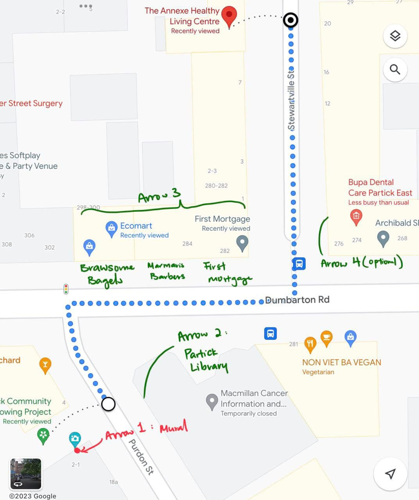

Turning Ideas into Reality
Today, our focus was on turning our idea into a feasible one. After our meeting with Jane yesterday, it became clear that the ease of implementation of the idea is critical, if The Annexe is to adopt the solution after our OIP.
Our solution has 4 parts to implement:
1. Set up the geocache at The Annexe
2. Install a plaque at the site of the mural
3. Install a speaker at the site of the mural (or QR code to an online audio recording)
4. Arrows leading from the mural to The Annexe
After doing some research, we found the following as a starting point to bringing the solution to life (or at least setting the foundation for The Annexe to do so).
On part 1, there are a series of steps to take, detailed on the Geocaching website, on how to set up a geocache. The forseeable bottleneck in this process is waiting for the geocache to be reviewed and approved (about 1 week turnaround time). Our team can attempt to set up the geocache this week, though we will need Jane to supply a container and logbook for the geocache. After meeting the Dreams and Aspirations group on Tuesday, we hope to gather at least 1 long-term member to maintain the geocache.
For parts 2 and 3, the mural is painted on the side of an apartment building built by the Partick Housing Association. It would be good to check with them to see if they allow the drilling of a plaque into the side of their building. The speaker idea is also hinging on their approval, otherwise our only choice would be to host the audio recording of the story online, and provide a QR code or shortened link for people to access it.
Regarding part 2, we found the following print shops that could produce the plaques:
1. Art of engraving UK
2. Brass Plaques and signs custom engraved
3. Engraved Plaques
On part 3, if the physical speaker idea is rejected by the Partick Housing Association or Jane, we can consider a QR code on the plaque and a shortened URL that leads to an online audio recording on the story behind the mural.
For part 4, we identified the following shops/businesses to approach to seek their approval of placing an arrow in their window (preferred for maintainability) or outside their building, pointing directions to The Annexe.

1. Partick Library (Arrow 2)
We noticed they have a poster in their window for Macmillan @ Partick, a cancer support organisation.
This organisation has a partnership with the Partick Library, in that they host an Information and Support centre in the library for people affected by cancer to drop by.
2. Brawsome Bagels, Marmaris Barbers, or First Mortgage (Arrow 3)
These shops are the only ones on this side of the street that appear to have space in their windows to place an arrow, and are either open during The Annexe’s opening hours (this is a concern as some places use roller shutters which cover the windows, so if they aren’t open then people will not be able to see the arrow), or have exposed windows throughout the day.
3. Bupa Dental Care (Arrow 4)
This is the only business on this last stretch of the journey to The Annexe.
On Google Maps, they have 1 poster in their window - a poster advertising one of their own services.
If this business does not allow for the arrow to be placed there, we can skip this one as it is on a straight path to The Annexe.
Instead, we can have Arrow 3 specify to "take the first left".
For the remainder of the day, we will work on creating proposals that we can share with the relevant parties to seek their support (Partick Housing Association and businesses in part 4).
Tomorrow, we will work on implementing part 1, and sending out emails (or getting someone from The Annexe to send them) to the Partick Housing Association in parts 2 and 3, as well as contacting the businesses in part 4.